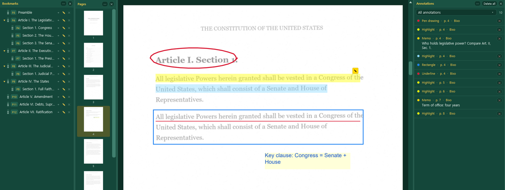
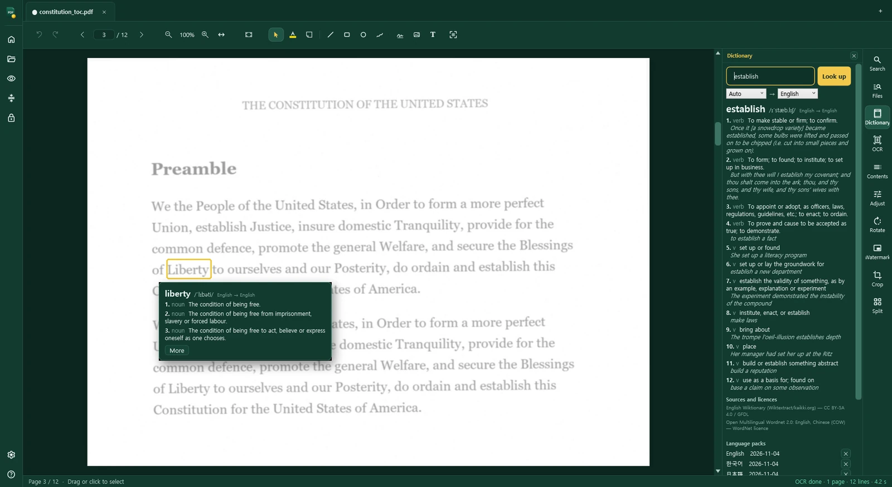
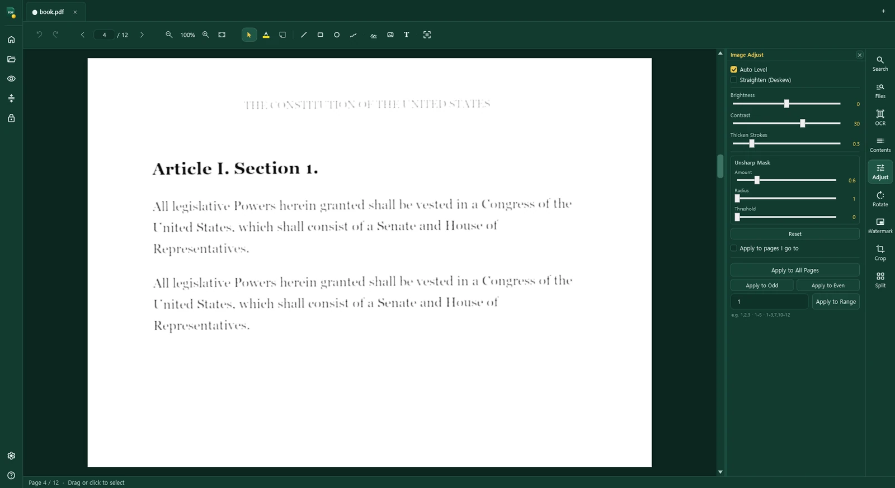
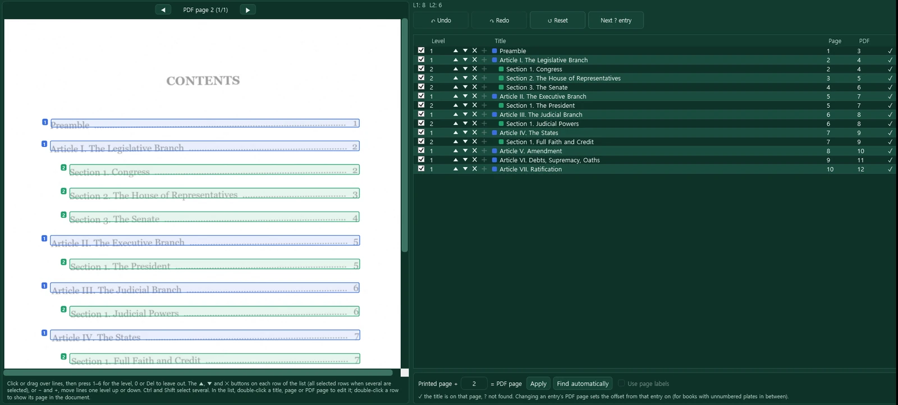

محرر PDF لنظام Windows
مستندات ممسوحة ضوئيًا تصبح مقروءة، وقابلة للبحث، وسهلة التنقل.
محرر PDF متكامل — إشارات مرجعية وتعليقات توضيحية وملاحظات — مع الأدوات التي تحتاجها المستندات الممسوحة ضوئيًا: OCR يتعرّف على النص بـ 50 لغة على جهازك الشخصي، وتحسين الصورة وتثخين الخطوط للصفحات الباهتة، وإشارات مرجعية وروابط تشعبية تُبنى من صفحة محتويات الكتاب، وضغط لملفات المسح الكبيرة، وقاموس بسبع لغات لأي كلمة في الصفحة.
Windows 10 (1809+) و 11 · 64 بت · بلا حساب، بلا اشتراك · نسخة تجريبية مجانية لمدة 15 يومًا
Marine Insurance Act 1906
1. A contract of marine insurance is a contract whereby the insurer undertakes to indemnify the assured, in manner and to the extent thereby agreed, against marine losses, that is to say, the losses incident to marine adventure.
2. A contract of marine insurance may, by its express terms, or by usage of trade, be extended so as to protect the assured against losses on inland waters or on any land risk which may be incidental to any sea voyage.
صغير وخفيف وسريع
كل ما تفعله بالمستندات يوميًا، في تطبيق يبدأ بسرعة ويقلّب الصفحات دون انتظار، حتى في ملف من آلاف الصفحات.
مستند حقيقي
تقرير خبير قضائي · 3,286 صفحة · 383 MB
- على الشاشة وجاهز للتمرير
- أقل من 1 ثانية
- الانتقال إلى الصفحة 3,286
- 0.2 ثانية
- جاهز للتحرير
- بعد ثوانٍ، في الخلفية
قيس على جهاز Windows 11 خاص بنا، بفتح الملف من القرص بنقرة.
ما أبقيناه
- قراءة النص والبحث فيه ونسخه، حتى في الصفحات الممسوحة ضوئيًا
- الإشارات المرجعية والتظليل والرسم والملاحظات والأختام والتواقيع
- دمج الصفحات وتقسيمها وقصّها وتدويرها وإعادة ترتيبها
- OCR يعمل على جهازك أنت
- إشارات مرجعية وروابط محتويات تُبنى تلقائيًا
- الضغط، والحماية بكلمة مرور، وحفظ الصفحات كصور
ما تركناه
- تسجيل الدخول والتخزين السحابي والمزامنة
- الاشتراك الشهري وتذكيرات التجديد
- لافتات الترويج للترقية وإلحاح النسخة التجريبية
- مصمّمو النماذج وفحوص ما قبل الطباعة الاحترافية
- قوائم متداخلة بعمق خمسة مستويات
- خروج مستنداتك من جهازك
الإشارات المرجعية والتعليقات التوضيحية والملاحظات
اقرأ الكتاب واعمل عليه كما تفعل على الورق: علّم عليه، واترك ملاحظات لوقت لاحق، وعُد إلى أي صفحة بنقرة من الإشارات المرجعية أو الصور المصغّرة للصفحات أو قائمة كل ما علّمت عليه.

الإشارات المرجعية
أنشئ إشارات مرجعية، واسحبها لتغيير ترتيبها ومستواها، وانقر إحداها للانتقال إلى صفحتها.
التعليم على الصفحة
ظلّل، وسطّر، واشطب، وارسم بالقلم، وأضف مربعات ودوائر وخطوطًا وأسهمًا.
الملاحظات ومربعات النص
اترك ملاحظة على الصفحة، أو اكتب عليها مباشرة؛ والأختام والتواقيع أيضًا.
كل التعليقات التوضيحية في قائمة
جميعها في قائمة واحدة، مرتّبة حسب النوع والصفحة، مع نصوصها. انقر أحدها للانتقال إليه.
الصفحات بنظرة واحدة
صور مصغّرة لكل صفحة، حتى في كتاب من آلاف الصفحات: لا يُرسم إلا الظاهر منها، فتظهر فورًا وتستهلك ذاكرة قليلة. انتقل إلى أي صفحة بنقرة.
روابط تعمل
الروابط إلى صفحات أخرى تنقلك إليها؛ وعناوين الويب تُفتح في متصفحك، ولا تُفتح إلا روابط الويب والبريد.
PDF قياسي. تُحفظ الإشارات المرجعية والتعليقات التوضيحية والملاحظات كإشارات مرجعية وتعليقات توضيحية عادية في PDF، فتظهر في برامج قراءة PDF الأخرى أيضًا.
اعرف معنى أي كلمة في الصفحة
قاموس بسبع لغات مدمج في القارئ. انقر نقرًا مزدوجًا على كلمة لترى معناها، دون مغادرة الصفحة أو فتح متصفح، سواء في ملف PDF رقمي الأصل أو في مسح ضوئي أجريت عليه OCR.

انقر الكلمة نقرًا مزدوجًا
تُفتح بطاقة بجوار الكلمة فيها نطقها ومعانيها الرئيسية. ويفتح المزيد اللوحة بكل المعاني. ويعمل ذلك في وضع التركيز أيضًا.
كل المعاني في اللوحة
أقسام الكلام والتعريفات والجمل المثالية، مرقّمة معنًى بعد معنى. اكتب أي كلمة للبحث عنها، أو حدّد عبارة في الصفحة.
سبع لغات، في أي اتجاه
الإنجليزية والكورية واليابانية والصينية والألمانية والفرنسية والروسية. اختر اللغة التي تريد الترجمة إليها: كلمة إنجليزية تُشرح بالكورية، وكلمة ألمانية باليابانية.
يجد صيغة المعجم
يُبحث عن الجموع وصيغ الماضي ونهايات الأفعال الكورية واليابانية تحت الصيغة الأساسية، فتكفي الكلمة كما هي مطبوعة.
نزّل مرة واحدة، ثم دون اتصال
اختر اللغات التي تحتاجها في اللوحة فتُنزَّل مرة واحدة. بعدها يجري كل بحث على جهازك؛ ولا تُرسل الكلمات التي تبحث عنها إلى أي مكان.
مصادر مفتوحة ومُعلنة
مبني من قواميس مفتوحة مثل Wiktionary وOpen Multilingual Wordnet. يسرد كل مدخل مصادره وتراخيصها.
حزم لغات مجانية. تأتي الحزم مع التطبيق دون تكلفة إضافية، وتُحدَّث من اللوحة عبر التحقق من وجود تحديثات. يبلغ حجم تنزيل كل حزمة 20–70 MB؛ واحذف ما لم تعد تحتاجه منها في اللوحة. راجع سياسة الخصوصية لمعرفة ما يرسله التنزيل وما لا يرسله.
أصلح مسحًا باهتًا في ثوانٍ
النسخ المصوّرة القديمة والمسوح الرمادية متعبة في القراءة. حرّك شريط التمرير فتتغير الصفحة على الشاشة فورًا. وحين تبدو مناسبة، طبّق الضبط على صفحة واحدة، أو على نطاق مثل 1-5، أو على الكتاب كله.
السُّمك
الخطوط الرفيعة المتقطعة تعود حروفًا متماسكة.
الحدّة
الحواف الناعمة غير الواضحة تصبح حادّة.
التباين
النص الرمادي على ورق رمادي يصبح أسود على أبيض.
السطوع
الصفحات المصفرّة أو الداكنة تصبح ورقًا نظيفًا.

قبل أن تعتمد. تعرض المعاينة الصفحة كما ستكون. لا يتغير شيء حتى تطبّق.
نطاقات الصفحات. اكتب 1,2,3 أو 10-40 لتطبيق الإعدادات نفسها على صفحات كثيرة دفعة واحدة.
وعلى الصفحة أيضًا. قصّ الهوامش، وقسّم الصفحات المزدوجة إلى صفحات مفردة، وقوّم المسوح المائلة من أجل OCR.
نص OCR محفوظ. الصفحة التي فيها نص OCR تحتفظ به عند حفظ الصفحة المضبوطة؛ وفي الصفحة المقوَّمة يُدار النص معها.
OCR مدرَّب على بياناتنا الخاصة
درّبنا أدوات التعرّف لدينا على بياناتنا الخاصة. على كتاب ممسوح ضوئيًا باللغة الكورية، ارتكب BixoPDF نحو ثلث أخطاء برنامج PDF الرائد A وخُمس أخطاء البرنامج B. وعلى كتاب باللغة الإنجليزية جاء مكافئًا للأفضل بين الاثنين. ويعمل كل ذلك على جهازك، فلا تذهب مستنداتك إلى أي خادم.
36 صفحة ممسوحة ضوئيًا من دليل قضائي كوري
53,123 حرفًا · متن، وأمثلة في مربعات، وجداول، وحواشٍ بحجم 6 نقاط
| البرنامج | الأحرف الخاطئة | الشريط |
|---|---|---|
| BixoPDF | 0.84% | |
| برنامج PDF الرائد A | 2.31% | |
| برنامج PDF الرائد B | 4.20% |
الأشرطة على مقياس 0–5%. الأقل أفضل.
32 صفحة ممسوحة ضوئيًا من كتاب إنجليزي في قانون البناء
81,443 حرفًا · متن، واقتباسات، وحواشٍ
| البرنامج | الأحرف الخاطئة | الشريط |
|---|---|---|
| BixoPDF | 0.25% | |
| برنامج PDF الرائد A | 0.26% | |
| برنامج PDF الرائد B | 0.35% |
الأشرطة على مقياس 0–0.5%. الأقل أفضل.
كيف اختبرنا. حُوّلت صفحات من ملفات PDF رقمية الأصل إلى مسوح بتدرّج الرمادي بدقة 300 dpi مع ميل طفيف وتمويه وتشويش وضغط JPEG، وحُفظت كملفات PDF من الصور فقط، ثم أُعطيت لأداة OCR في كل برنامج على الجهاز نفسه في أكتوبر 2026. قُرئت طبقة النص في كل نتيجة بالطريقة نفسها وقورنت بالنص الأصلي مع استبعاد المسافات. لم يُستخدم أيٌّ من الكتابين في تدريب أدوات التعرّف لدينا. البرنامجان A وB محرّرا PDF تجاريان واسعا الانتشار فيهما OCR مدمج، بالإصدارات المثبّتة على جهاز الاختبار.
إخلاء مسؤولية. هذه النتائج مأخوذة من اختبارات أُجريت في بيئة محدودة على مجموعة محدودة من المستندات. ولا تعني أن النتائج نفسها ستتحقق في كل بيئة أو مع كل مستند. تعتمد الدقة على المسح والتخطيط والخطوط واللغة والإعدادات المستخدمة، وقد تختلف نتائجك.

الكتابة اللاتينية · افتراضي
الإنجليزية، والفرنسية، والألمانية، والإسبانية، والبرتغالية، والإيطالية، والهولندية، والدنماركية، والنرويجية، والسويدية، والفنلندية، والآيسلندية، والبولندية، والتشيكية، والسلوفاكية، والمجرية، والسلوفينية، والكرواتية، والصربية (اللاتينية)، والبوسنية، والليتوانية، والإستونية، والتركية، والألبانية، والكتالونية، والأيرلندية، والإندونيسية، والملايوية، والتاغالوغية، والسواحيلية، واللاتينية
الكتابة السيريلية
الروسية، والأوكرانية، والبيلاروسية، والبلغارية، والصربية (السيريلية)، والمقدونية، والكازاخية، والقيرغيزية، والطاجيكية، والمنغولية، والتترية، مع كلمات لاتينية في السطر نفسه.
الكتابة الديفاناغارية
الهندية، والماراثية، والنيبالية، والسنسكريتية، مع الأرقام والكلمات اللاتينية في السطر نفسه.
الكورية
الهانغول والهانجا والمسافات بين الكلمات في مرور واحد، مع الاقتباسات اليابانية.
الصينية
المبسّطة والتقليدية، بأداة تعرّف من الجيل الحالي.
اليابانية
الكانجي والكانا، مع الصينية والإنجليزية في الصفحة نفسها.
العربية
تُعاد الأسطر المكتوبة من اليمين إلى اليسار إلى ترتيب القراءة، مع وضع الأرقام والنسب المئوية والأقواس وعلامات الترقيم في مواضعها الصحيحة.
واصل العمل أثناء القراءةيعمل OCR في الخلفية. افتح ملفات PDF أخرى في علامات تبويبها الخاصة، واقرأها، وعلّق عليها، واحفظها بينما يجري التعرّف على كتاب. انتبه للذاكرة: يستهلك OCR الكثير منها، لذا فإن فتح ملف PDF كبير جدًا أو تشغيل OCR على عدة ملفات في آنٍ واحد أثناء عمل OCR قد يستنفد ذاكرة جهازك ويجعل التطبيق يتوقف عن العمل.
ملفات PDF قابلة للبحثطبقة نص غير مرئية تحت صورة الصفحة، فيعمل البحث والنسخ في أي برنامج لقراءة PDF.
OCR دفعيأسقِط مجلدًا من ملفات PDF وعُد لتجدها كلها قابلة للبحث.
يقوّم أولًاتُقوَّم الصفحات المائلة قبل القراءة، للحصول على أسطر أنظف.
عمودان بالترتيبالصفحات المنضّدة في عمودين تُقرأ عمودًا تلو عمود، فيتبع النص المنسوخ والبحث ترتيب قراءتك.
يستبدل OCR الضعيفالنص الذي أخفاه برنامج أقدم تحت المسح يُستبدل بالنتيجة الجديدة.
50 لغة لـ OCR · جميعها مضمّنة
- أوروبا الغربية
- الإنجليزية، الفرنسية، الألمانية، الإسبانية، البرتغالية، الإيطالية، الهولندية، الكتالونية، الأيرلندية
- أوروبا الشمالية
- الدنماركية، النرويجية، السويدية، الفنلندية، الآيسلندية
- أوروبا الوسطى والشرقية
- البولندية، التشيكية، السلوفاكية، المجرية، السلوفينية، الكرواتية، الصربية (اللاتينية)، البوسنية، الألبانية
- البلطيق
- الليتوانية، الإستونية
- لغات أخرى بالكتابة اللاتينية
- التركية، الإندونيسية، الملايوية، التاغالوغية، السواحيلية، اللاتينية
- الكتابة السيريلية
- الروسية، الأوكرانية، البيلاروسية، البلغارية، الصربية (السيريلية)، المقدونية، الكازاخية، القيرغيزية، الطاجيكية، المنغولية، التترية
- الكتابة الديفاناغارية
- الهندية، الماراثية، النيبالية، السنسكريتية
- شرق آسيا
- الكورية (الهانغول والهانجا)، الصينية (المبسّطة والتقليدية)، اليابانية
- من اليمين إلى اليسار
- العربية
تُدرج اللغات المكتوبة بالحروف اللاتينية حين تكون كل الحروف التي تستخدمها ضمن أبجدية أداة التعرّف. أما الرومانية واللاتفية والفيتنامية والمالطية والإسبرانتو والويلزية والأذربيجانية فتستخدم بعض الحروف غير الموجودة فيها، لذا قد تُقرأ تلك الحروف على أنها حروف مشابهة.
إشارات مرجعية وروابط محتويات تُصنع لك
لا فائدة من مسح من 1,000 صفحة ما لم تستطع التنقل فيه. يقرأ BixoPDF صفحات المحتويات في الكتاب نفسه ويبني لك شجرة الإشارات المرجعية والروابط. وما عليك إلا أن تراجعها وتصحّح الأسطر القليلة التي لا يثق بها.
أشِر إلى صفحات المحتويات
اخترها من قائمة الصفحات، مثلًا الصفحات 5–12.
يقرأ كل مدخل
العنوان، والمستوى المستمد من الترقيم، ورقم الصفحة المطبوع. تُطابَق الصفحات المطبوعة مع صفحات PDF من خلال أرقام الصفحات المطبوعة في رأس كل صفحة أو تذييلها، أو تسميات صفحات الكتاب، أو إزاحة، ثم يُتحقَّق منها مقابل نص كل صفحة. وتعمل أيضًا الكتب المرقّمة بالفقرات (1.01, 2.30)، وكذلك صفحات المحتويات المقروءة بـ OCR: إذ تُعالَج أرقام الصفحات المقروءة خطأً والعناوين المتكررة في رؤوس الصفحات والحروف المضاعفة، ويُصحَّح العنوان من الترويسة في صفحته.
صحّح ببضع نقرات
تُعلَّم الأسطر المشكوك فيها. غيّر المستوى بـ + و −، وأصلح رقم صفحة، وأدرج سطرًا أو تجاوزه.
أنشئ الإشارات المرجعية والروابط
يصبح كل سطر في المحتويات رابطًا إلى فصله. وتعمل الروابط في برامج قراءة PDF الأخرى أيضًا، وإعادة التشغيل تستبدل الروابط القديمة بدلًا من تكديس روابط جديدة فوقها.

والأدوات اليومية
النص من المسوح
حدّد نص OCR وانسخه وابحث فيه في هذا التطبيق أو في أي برنامج لقراءة PDF؛ وصدّره نصًا عاديًا.
الصفحات
أدرج الصفحات واحذفها وانقلها ودوّرها وقصّها وقسّمها؛ وعيّن تسميات الصفحات مثل i, ii, 1, 2.
الدمج
اجمع ملفات PDF وصورًا كثيرة في ملف واحد، من التطبيق أو من قائمة النقر بزر الماوس الأيمن في المستكشف.
الضغط
صغّر المسوح بالأبيض والأسود، أو تدرّج الرمادي، أو جودة JPEG، أو الدقة، مع تقدير للحجم أولًا.
البحث في ملفات كثيرة
ابحث عن كلمة أو عبارة في مجلد كامل من ملفات PDF، حتى حين يقسمها فاصل أسطر، وافتح الصفحة التي هي فيها.
الحماية والتصدير
احمِ الملف بكلمة مرور بتشفير AES-256، واحفظ الصفحات بصيغة JPG أو PNG، وصدّر نص OCR.
شرح ملفات PDF المحمية
قبل أن يطلب كلمة المرور، يخبرك التطبيق بما يقيّده المستند — الطباعة، والتعديل، والنسخ، والتعليقات، والصفحات — وما إذا كان بإمكانك قراءته من دونها.
وضع التركيز
يُخفي F11 كل شيء عدا الصفحات، التي تُقلَّب كالكتاب، مع بقاء التظليل والملاحظات والقاموس في متناولك.
البحث عن التالي والسابق
ينقلك F3 وShift+F3 عبر كل تطابق في المستند؛ ويتغير التكبير بخطوات من 10 %.
العلامات المائية
نص أو شعار أو كلاهما، بأي لون، على صفحات مختارة أو فردية أو زوجية — مع عرض العربية والهندية كما يعرضهما Windows — وإزالتها بالسهولة نفسها.
Word وExcel
احفظ ملف PDF كمستند Word بخطوطه وعناوينه وجداوله، أو كمصنّف Excel، مع تضمين نص OCR.
ثماني لغات
التطبيق نفسه بالإنجليزية والكورية واليابانية والصينية والروسية والهندية والعربية، مع تخطيط من اليمين إلى اليسار في العربية.
صغّر ملفات المسح الكبيرة
تبلغ أحجام المستندات الممسوحة ضوئيًا مئات الميغابايت، وهي أكبر من أن تُرسل بالبريد الإلكتروني، أو تُرفع إلى بوابة محكمة أو عميل، أو تُحفظ بالآلاف. اختر مدى الضغط، وشاهد الحجم والصفحة قبل أن تعتمد، واحفظ نسخة أصغر.
كتاب حقيقي
The Law of Marine Insurance · 1,082 صفحة ممسوحة ضوئيًا
أصغر بنسبة 45%، مع بقاء صفحاته الملوّنة ملوّنة. ويمكن أن تتقلّص صفحات النص المحوّلة إلى الأبيض والأسود إلى العُشر أو أقل.
لا يضيع شيء آخر. يبقى النص ونص OCR والتعليقات التوضيحية والإشارات المرجعية كما كانت. لا يُعاد ضغط إلا صور الصفحات.
يبقى الأصل كما هو. تُحفظ النتيجة كملف جديد وتُفتح في علامة تبويب خاصة بها، لتتمكن من المقارنة.
البحث لا يزال يعمل. يظل الكتاب المضغوط الذي أُجري عليه OCR قابلًا للبحث والنسخ في أي برنامج لقراءة PDF.
سعر واحد: $29
لا فئات ولا فاتورة شهرية. كل ميزة في هذه الصفحة مضمّنة. يعرض Microsoft Store السعر بعملتك المحلية.
BixoPDF · النسخة الكاملة · Microsoft Store
- الإشارات المرجعية والتعليقات التوضيحية والملاحظات
- تحسين المسح، وOCR، وإشارات مرجعية وروابط تلقائية
- جميع لغات OCR مضمّنة
- قاموس بسبع لغات، وحزم لغات مجانية
- يعمل دون اتصال، ولا حاجة إلى حساب (تُنزَّل حزم القاموس مرة واحدة)
- Windows 10 (1809+) و 11، 64 بت
- التحديثات عبر Microsoft Store
تشتري تراخيص كثيرة لشركة أو مؤسسة؟ راسلنا مباشرة على support@bixopdf.com.
تُباع معظم حزم PDF بالاشتراك، وتكلفة سنة واحدة منها تعادل أضعاف هذا السعر.
يُدفع ثمن BixoPDF مرة واحدة: محرر PDF كامل، مع ما تحتاجه المستندات الممسوحة ضوئيًا — مقروءة، وقابلة للبحث، وسهلة التنقل.
نزّل النسخة التجريبية لمدة 15 يومًا
النسخة التجريبية هي التطبيق الكامل: كل ميزة في هذه الصفحة، دون علامة مائية ودون قيود، لمدة 15 يومًا من يوم تثبيتها.
نزّل النسخة التجريبية (15 يومًا، مجانًا)BixoPDF-Trial-Setup.exe · الإصدار 1.3.6 · 163 MB · Windows 10 (1809+) و 11، 64 بت
SHA-256 1482c83822dd8140e00220454c590f02296d60509cc3797514841fa070f94ac9
- نسخة تجريبية واحدة لكل جهاز. إزالة التطبيق وتثبيته مجددًا لا تبدأ فترة تجريبية جديدة، ولا إرجاع الساعة إلى الوراء كذلك.
- بعد 15 يومًا لا تعود النسخة التجريبية تفتح المستندات، وتُظهر مكان الحصول على النسخة الكاملة. تبقى ملفات PDF والإعدادات كما كانت.
- لمواصلة استخدام BixoPDF، احصل عليه من Microsoft Store؛ فهو يُثبَّت بجانب النسخة التجريبية، لذا أزل النسخة التجريبية من إعدادات Windows ← التطبيقات.
- قد يحذّرك Windows. برنامج إعداد النسخة التجريبية غير موقَّع رقميًا بعد، لذا قد يعرض Windows SmartScreen الرسالة «Windows protected your PC» (قام Windows بحماية الكمبيوتر). اختر More info (مزيد من المعلومات)، ثم Run anyway (تشغيل على أي حال). أما نسخة Store فتتحقق منها Microsoft ولا تُظهر أي تحذير.
أسئلة
إجابات قصيرة عمّا يسأل عنه الناس أولًا.
هل يمكنني تجربته قبل الشراء؟
نعم. النسخة التجريبية لمدة 15 يومًا هي التطبيق الكامل لمدة 15 يومًا. تُمنح نسخة تجريبية واحدة لكل جهاز: إعادة التثبيت لا تبدأها من جديد. بعد ذلك، النسخة الكاملة متاحة على Microsoft Store.
هل يحتاج OCR إلى اتصال بالإنترنت؟
لا. تُثبَّت أدوات التعرّف مع التطبيق وتعمل على جهازك. لا تُرفع مستنداتك إلى أي مكان.
هل يحتاج القاموس إلى اتصال بالإنترنت؟
فقط لتنزيل حزمة لغة، مرة واحدة، عندما تطلبها في لوحة القاموس؛ والحزم مجانية. بعد ذلك يجري البحث على جهازك، ولا تُرسل الكلمات التي تبحث عنها أبدًا. وتشرح سياسة الخصوصية عملية التنزيل.
هل يمكنني مواصلة العمل أثناء تشغيل OCR؟
نعم. يعمل OCR في الخلفية، فيمكنك فتح ملفات PDF أخرى في علامات تبويب جديدة، وقراءتها، وإضافة التظليل والملاحظات وحفظها بينما يجري التعرّف على مسح طويل. لكن OCR يستهلك الكثير من الذاكرة: على جهاز ذي ذاكرة محدودة، قد يؤدي فتح ملف PDF كبير جدًا أو تشغيل OCR على عدة ملفات في الوقت نفسه أثناء عمل OCR إلى توقف التطبيق عن العمل. احفظ عملك أولًا، ودع مهمة OCR واحدة تنتهي قبل بدء التالية.
بأي اللغات يتوفر التطبيق؟
الإنجليزية والكورية واليابانية والصينية (المبسّطة والتقليدية) والروسية والهندية والعربية. يبدأ بلغة Windows لديك ويمكن تغييرها من الإعدادات ← اللغة؛ وفي العربية تُعرض النافذة من اليمين إلى اليسار. ويقرأ OCR 50 لغة أيًّا كانت لغة التطبيق.
ما إصدارات Windows المدعومة؟
Windows 10 الإصدار 1809 أو أحدث، وWindows 11، على أجهزة 64 بت.
هل ستعمل إشاراتي المرجعية وروابطي في برامج قراءة PDF الأخرى؟
نعم. تُحفظ كإشارات مرجعية وتعليقات روابط قياسية في PDF.
ماذا يحدث للنص الذي تركه برنامج OCR أقدم في ملف PDF الخاص بي؟
إذا كان ذلك النص مخفيًا تحت صورة الصفحة، يستبدله BixoPDF بنص OCR الجديد عند الحفظ. وإذا كان النص هو المحتوى المرئي للصفحة، يسألك أولًا.
هل يمكنني جعل التطبيق يفتح ملفات PDF افتراضيًا؟
نعم. في إعدادات Windows ← التطبيقات ← التطبيقات الافتراضية، اختر BixoPDF لملفات .pdf.
من أين أشتريه، وكيف تصل التحديثات؟
يُباع BixoPDF على Microsoft Store. يتولى المتجر تثبيته وتحديثه باستمرار، على كل جهاز Windows مسجَّل الدخول بحساب Microsoft نفسه.
هل يمكنني شراء تراخيص بالجملة؟
نعم. لعمليات الشراء بالكميات لشركة أو مكتب محاماة أو مؤسسة، راسل support@bixopdf.com وأخبرنا بعدد الأجهزة المطلوبة.
كيف أحصل على المساعدة؟
راسل support@bixopdf.com. وتسرد صفحة الدعم ما ينبغي تضمينه في رسالتك.